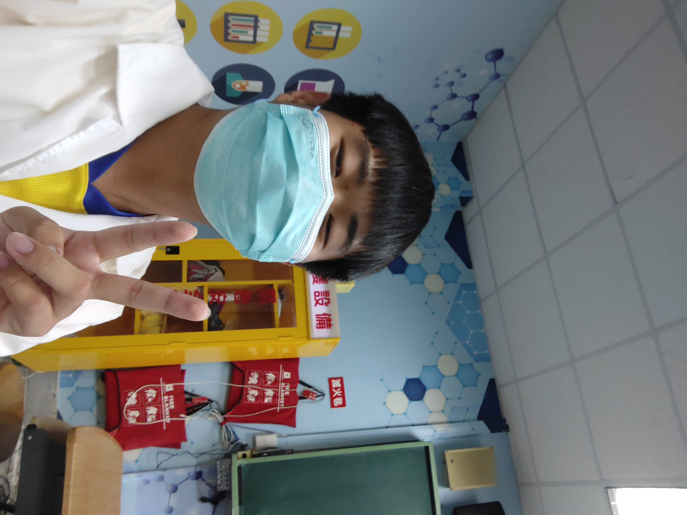

姓名:吳冠頡
出生年:2026年8月22日
學號:411322524
個性:善良樂心助人，喜歡解決問題，樂於去幫助需要幫助的人
興趣:喜歡釣魚，也喜歡騎自行車，跑步，和其他戶外運動
我第一次接觸到程式是在我國中時，那時很夯的一個程式語言叫做scratch，我覺得很有趣，
我也拿來做了許多小遊戲，那時我就下定決心，我以後長大要成為一名軟體工程師。
我在大學期間也學了許多的程式設計課程，像是java，python，html，c，css等等，
希望到職場時能夠順利地發揮我以前所習成的技能，去幫助公司排解難疑。
我目前還沒有一張程式檢定的證照，所以我希望能在下學期前考到一張，
還有，我目前正在補強我的英文，我的目標是多益550以上，我已經準備一陣子了，
預計也是下學期前能完成，希望能夠為我增強一點進爭力。